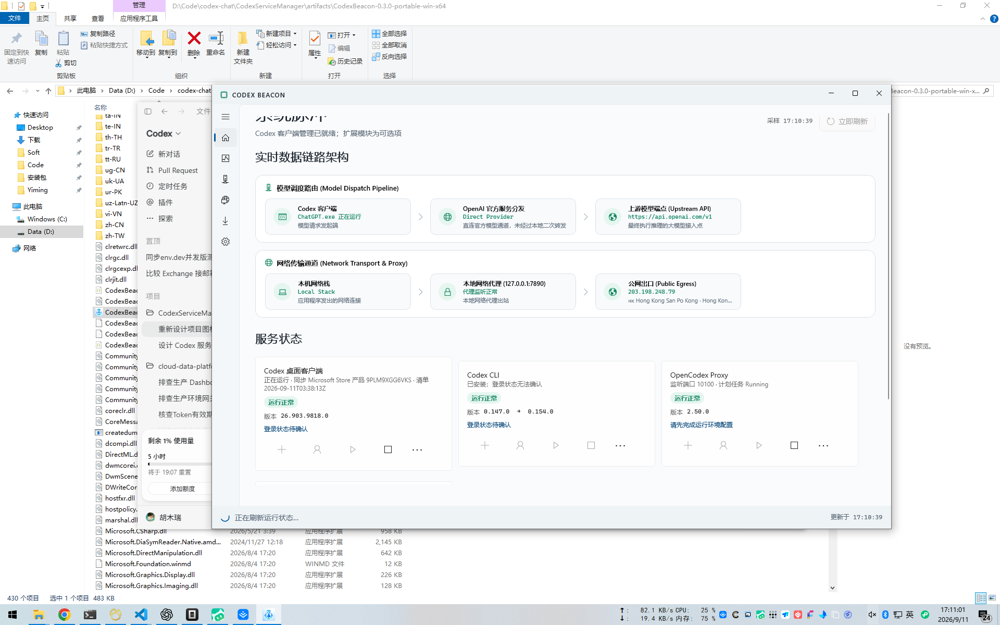

在单一原生 WinUI 3 窗口中，统一调度 ChatGPT 桌面端、Codex CLI、OpenCodex 代理分流、Codex Relay 远程隧道、Node/NVM 依赖与 Tailscale 组网。实时看清每一条请求的走向与公网真实出口。

当你在 Windows 上协同使用 ChatGPT 桌面端与 Codex CLI 时，多套端口、不同版本的代理扩展、失控的 Node 进程与复杂的网络出口常常让人抓狂。
独立读取官方微软商店版 ChatGPT 客户端（OpenAI.Codex）与 npm 全局安装的 Codex CLI。对比本地版本与官方 npm registry 最新版本，直接在面板中一键检查更新，不再盲目升级导致环境破坏。
行业首创将“模型分发管线”与“底层网络代理路径”解耦。一眼看清当前 AI 请求是直连 OpenAI 官方、走 OpenCodex 智能代理分流到 DeepSeek/Claude，还是被系统代理或 Tailscale 转发。
直接以 OpenAI 服务端接收视角探测本机的真实外网回源 IP。智能识别是家庭宽带（Residential）还是数据中心机房（IDC），搭配国家国旗与运营商/AS 归属，及时发现代理失效导致的拒付风控。
内置严格的进程退出白名单：一键清理卡死失联的 OpenCodex 与 Relay 代理，但绝不误杀 ChatGPT 客户端或其它开发中的 Node 进程。Provider Key 严格保存在当前用户隐藏目录，禁止进入任何日志与诊断包。
每个板块各司其职，遵循“安装 → 登录 → 启动”的真实状态流。点击下方标签，查看每个面板的真实能力与输出。
聚合展示 ChatGPT 官方客户端（MSIX 安装）与全局 Codex CLI 的运行健康度。对比当前安装版本与 npm 最新发行版本，实时侦测监听端口与活跃账号。
下载即用，不写注册表，无运行时依赖。默认普通用户权限启动，安全无残留。
单文件免安装版。内嵌 .NET 10 与 Windows App SDK 1.8 完整运行时，无需预装任何环境，直接解压运行。
轻量体积版本。适合机器已统一部署 .NET 10 Desktop Runtime 与 Windows App Runtime 的开发环境，体积更小。